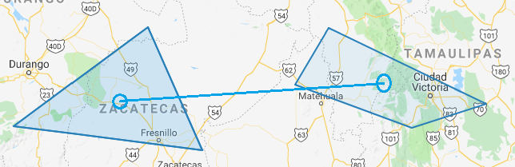
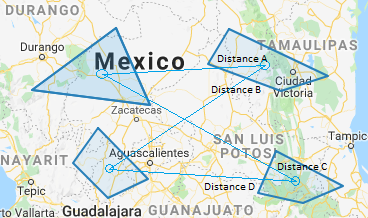

Drive-Time Matrix¶
Drive Time Calculation¶
Option One¶
If origin and destination geographies only have one polygon each. We’ll get the centroid of the origin and destination polygon and then calculate drive time
Option Two¶
If origin and/or destination geographies has multiple polygons. We’ll do option 1 for each polygon then calculate the average drive time
Computation Based on image bellow: (Distance A + Distance B + Distance C + Distance D) / 4
Sample Query and Results
To view this data in a spreadsheet, please view it <a href=”https://docs.google.com/spreadsheets/d/1NzqmNex2vIzCXrK2JHLXlIfhvoysTmwCBNdQYiZm8TU/edit?usp=sharing” target=”_blank”>here</a>.
window.navagis.getAccountDriveTimeList("509751182822998022","509751182822998023")
.then(function (response) {
// do stuff here
});
// response object as json
{
"destinationAddresses": [
"Golden State Blvd. & N. Center St. (KFC), Turlock, CA 95380, USA"
],
"originAddresses": [
"11348 Deerfield Dr, Truckee, CA 96161, USA"
],
"rows": [
{
"elements": [
{
"distance": {
"text": "297 km",
"value": 297132
},
"duration": {
"text": "2 hours 56 mins",
"value": 10571
},
"duration_in_traffic": {
"text": "2 hours 42 mins",
"value": 9721
},
"status": "OK"
}
]
}
],
"status": "OK"
}
The Distance Matrix API has limits. Therefore, we broke it into 3 different requests with 10 each request.
origins = [
"509751182822998017",
"509751182822998019",
"509751182822998022",
"509751182822998024",
"509751182822998026",
"509751182822998028",
"509751182822998030",
"509751182822998032",
"509751182822998034",
"509751182822998036"
];
destinations = [
"509751182822998018",
"509751182822998020",
"509751182822998023",
"509751182822998025",
"509751182822998027",
"509751182822998029",
"509751182822998031",
"509751182822998033",
"509751182822998035",
"509751182822998037"
];
window.navagis.getDriveTimeListAccountIds(origins, destinations)
.then(function (response) {
// do stuff
});